对比Ruby和Python的垃圾回收（1）
注：这篇文章基于我在布达佩斯的RuPy大会上所作的演讲。我觉得与其直接将幻灯片发布出来，不如在我还有印象的时候将它写成博客来的更有意义。同样，我会在将来发布RuPy大会的视频链接。我计划将在RubyConf大会上发表类似的演讲，除了有关于Python的部分，并且将对比MRI、JRuby和Rubinius的垃圾回收器是怎样工作的。
如果想要对Ruby垃圾回收器以及内部原理有更加深入的了解，你可以在我即将出版的新书《Ruby Under a Microscope》中找到答案。
在”Ruby Python”大会上，我想对比Ruby和Python内部的垃圾回收机制是一件很有意思的事情。在开始之前，我们为什么要讨论垃圾回收机制呢？毕竟这是一个最迷人的，最令人激动的主题，不是吗？你们有多少人对垃圾回收机制感到兴奋？(许多大会参与者竟然举起了双手！)
最近，在Ruby社区中有一篇帖子，关于怎样通过修改Ruby GC的设置来提高单元测试的速度。这棒极了！通过减少GC垃圾回收的处理来提高测试的速度，这是一件好事，但是不怎的，GC不会真正的让我感到兴奋。就如咋一看就感觉令人厌烦，枯燥的技术帖子。
事实上，垃圾回收是一个令人着迷的主题：垃圾回收算法不仅是计算机科学历史一个重要的部分，更是前沿研究的一个主题。例如，MRI Ruby解释器使用的”Mark Sweep”算法已经超过了50年的历史，与此同时，在Rubinius解释器中使用的一种垃圾回收算法，是在Ruby中的另一种实现方式，这种算法仅仅是在2008才被研究出来。
然而，”垃圾回收”的这个名称非常不恰当。
应用程序的心脏
垃圾回收系统要做的不仅仅是”回收垃圾”。事实上，它主要完成三个重要任务：
- 为新的对象分配内存
- 标记垃圾对象
- 回收垃圾对象占用的内存
想象你的应用程序是一个人的身体：所有你写的优雅代码，业务逻辑，算法，将会成为你的应用程序的大脑或智能。与此类似的，你认为垃圾回收器会成为身体的哪一个部分呢？(我从大会的听众中得到了很多有趣的答案：肾，白细胞)
我认为垃圾回收器是一个应用的心脏。正如心脏为身体的其他部分提供血液和养料一样，垃圾回收器提供内存和对象供程序使用。如果你的心脏停跳，你将活不了几秒。如果垃圾回收器停止运行或者变慢，就像动脉阻塞一样，你的程序将变的慢下来，最后死掉！
一个简单的例子
通过例子来验证理论是一种很好的方式。这里有一个简单的类，用Python和Ruby写成，我们可以将它们作为一个简单的例子：
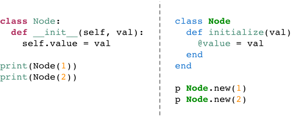
于此同时，两种代码如此相似，让我感到非常吃惊：Python和Ruby在表达相同的语义时几乎没有差别。但是，两种语言的内部实现方式是否相同呢？
空闲对象链表
在上面的代码中，当我们调用了Node.new(1)之后，ruby将会做什么？也就是说，Ruby怎样创建一个新的对象？
令人惊讶的是，Ruby做的事情非常少！事实上，在代码运行之前，Ruby解释器会提前创建成千上万的对象放置到一个链表中，这个链表被称为”空闲对象链表”(free list)。空闲对象链表(free list)在概念上看起来像下面的样子：
每一个白色方块可以想象成一个预创建的，没有使用的Ruby对象。当我们调用Node.new，Ruby简单的使用一个对象，并且将它的引用返回给我们：
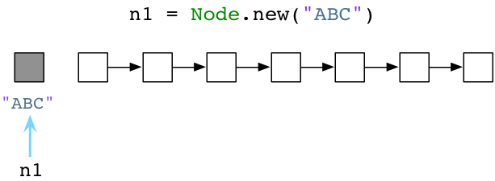
在上图中，左边的灰色方块代表一个活跃的Ruby对象，已被使用，而其余的白色方块代码没有使用的对象。(注意：当然，图中是一种简化的实现版本。事实上，Ruby将会使用另外一个对象保存字符串”ABC”，使用第三个对象保存Node的定义，以及其他的对象保存代码处理过的抽象语法数”AST”。)
如果我们再次调用Node.new，Ruby仅仅返回另外一个对象的引用。
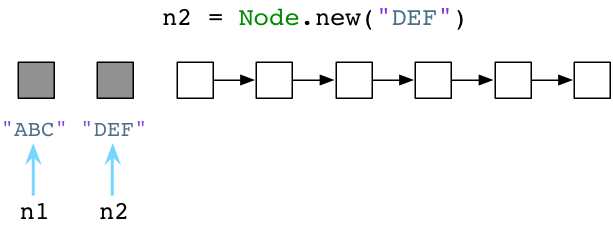
这种使用预创建对象链表的简单算法发明于50多年前，它的作者是传说中的计算机科学家，约翰·麦卡锡，正是他实现了最初的Lisp解释器。Lisp不仅是第一个函数式编程语言，并且包含了计算机科学中许多突破性的进展。其中之一便是通过垃圾回收机制自动管理内存。
标准版Ruby，也就是”Matz’s Ruby Interpreter”(MRI)，使用了一种类似于约翰麦卡锡在1960年实现的Lisp的垃圾回收算法。就像Lisp一样，Ruby会预先创建对象并且在你创建对象或值的时候返回对象的引用。
在Python中分配对象内存
从上面我们可以看出，Ruby会预先创建对象，并且保存在空闲对象链表(free list)中。那么Python呢？
当然Python内部也会由于各种原因使用空闲对象链表(它使用链表循环确定对象)，Python为对象和值分配内存的方式常常不同于Ruby。
假设我们创建一个Node对象使用Python：
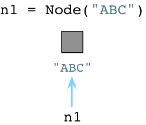
Python不同于Ruby，当你创建对象的时候，Python会立即向操作系统申请分配内存。(Python 事实上实现了自己的内存分配系统，它在操作系统内存堆上提供了另外一层抽象，但是今天没有时间深入探讨。 )
当我们创建第二个对象时，Python将再次向操作系统申请更多的内存：
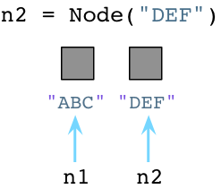
看起来相当简单，当我们创建Python对象的时候，将花费时间申请内存。

Ruby开发者生活在一个脏乱的房间
回到Ruby，由于我们分配越来越多的对象，Ruby将继续为我们从空闲对象链表(free list)获取预分配对象。因此，空闲对象链表将变得越来越短：
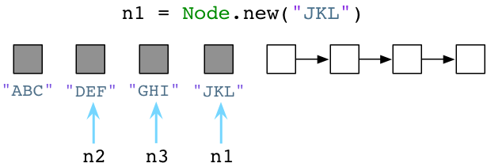
或者更短：
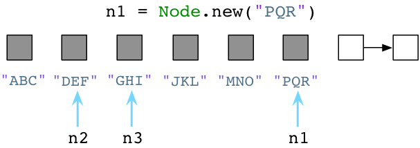
请注意，我将一个新的值赋给了n1，Ruby会遗留下旧的值。”ABC”, “JKL”和”MNO”等结点对象会依然保留在内存中。Ruby不会立即清理旧的对象，尽管程序不再使用！作为一名Ruby开发者就像生活在一个脏乱的房间，衣服随意扔在地板上，厨房的水槽中堆满了脏盘子。作为一个Ruby开发者，你必须在一大堆垃圾对象中工作。
Python开发者生活在一所整洁的房子
垃圾回收机制在Python和Ruby中迥然不同，让我们回到前面三个Python中Node对象的例子：
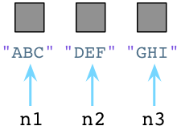
从内部来看，每当我们新建一个对象，Python将在对象对应的C语言结构中保存一个数字，叫做引用计数（reference count）。最初，Python将它的值设为1。
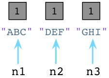
值为1表明每个对象有一个指针或引用指向它。假设我们创建一个新的对象，JKL：
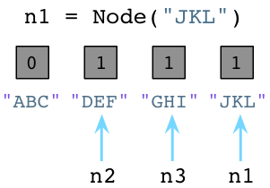
正如前面所说，Python将”JKL”的引用设置为1。同样注意到我们改变n1指向了”JKL”，不再引用”ABC”，同时将”ABC”的引用计数减少为0。
通过这一点，Python垃圾回收器将会立即执行！无论何时，只要一个对象的引用计数变为0，python将立即释放这个对象，并且将它的内存返回给操作系统。
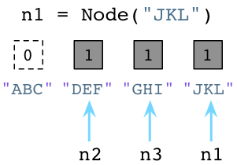
上图中，Python将回收”ABC”对象的内存。记住，Ruby只是将旧的对象遗留在那里，并且不去释放它们占用的内存。
这种垃圾回收算法被称为”引用计数”，由乔治柯林斯发明于1960年。非常巧合的是在同一年约翰麦卡锡大叔发明了”空闲对象链表算法”。正如Mike Bernstein在Ruby Conference大会上所说”1960年是属于垃圾回收器的…”。
作为一个Python开发者，就像生活在一个整洁的房间中。你知道，你的室友有些洁癖，他会把你使用过的任何东西都清洗一遍。你把脏盘子，脏杯子一放到水槽中他就会清洗。
现在看另外一个例子，假设我们让n2和n1指向同样的结点：
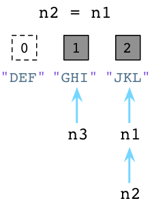
上图左边可以看到，Python减少了”DEF”的引用计数并且立即回收了”DEF”对象。同时可以看到，由于n1和n2同时指了”JKL”对象，所以它的引用计数变为了2。
标记回收算法
最终脏乱的房间将堆满垃圾，生活不能总是如此。Ruby程序在运行一段时间之后，空闲对象链表最终将被用尽。
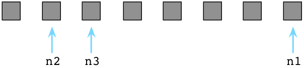
上图中所有的预分配对象都被用尽(方块全部变成了灰色)，链表上没有对象可用(没有剩余的白色方块)。
此时，Ruby使用了一种由约翰麦卡锡发明的被称为”标记回收”的算法。首先，Ruby将停止程序的执行，Ruby使用了”停止这个世界，然后回收垃圾”的方式。然后，Ruby会扫描所有的指向对象和值的指针或引用。同样，Ruby也会迭代虚拟机内部使用的指针。它会标记每一个指针所能到达的对象。在下图中，我使用了”M”指出了这些标记：
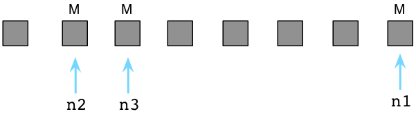
上面三个”M”标记的对象为活跃对象，依然被我们的程序使用。在Ruby解释器内部，通常使用”free bitmap”的数据结构来保存一个对象是否被标记：
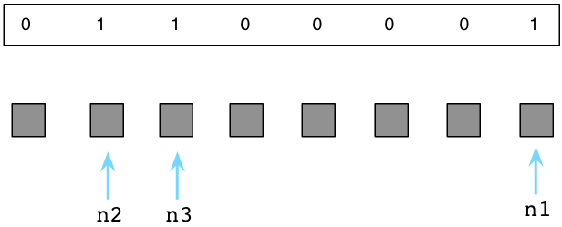
Ruby将”free bitmap”保存在一个独立的内存区域，以便可以更好的利用Unix的”copy-on-write”特性。更详细的信息，请参考我的另一篇文章《为什么Ruby2.0的垃圾回收器让我们如此兴奋》。
如果活跃对象被标记了，那么其余的便是垃圾对象，意味着它们不再会被代码使用。在下图中，我使用白色的方块表示垃圾对象：
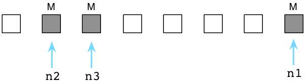
接下来，Ruby将清理没有使用的，垃圾对象，将它们链入空闲对象链表(free list)：
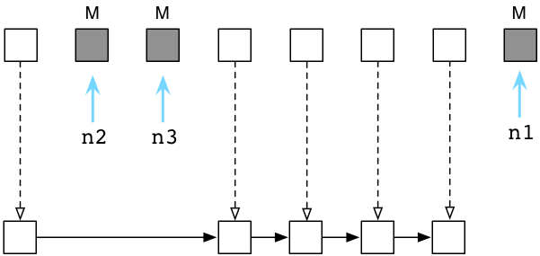
在解释器内部，这个过程非常迅速，Ruby并不会真正的将对象从一个地方拷贝到另一个地方。相反的，Ruby会将垃圾对象组成一个新的链表，并且链入空闲对象链表(free list)。
现在，当我们要创建一个新的Ruby对象的时候，Ruby将为我们返回收集的垃圾对象。在Ruby中，对象是可以重生的，享受着多次的生命！
标记回收算法 vs. 引用计数算法
乍一看，Python的垃圾回收算法对于Ruby来说是相当让人感到惊讶的：既然可以生活在一个整洁干净的房间，为什么要生活在一个脏乱的房间呢？为什么Ruby周期性的强制停止运行程序，去清理垃圾，而不使用Python的算法呢？
然而，引用计数实现起来不会像它看起来那样简单。这里有一些许多语言不愿像Python一样使用引用计数算法的原因：
首先，实现起来很困难。Python必须为每一个对象留有一定的空间来保存引用计数。这会导致一些细微的内存开销。但更遭的是，一个简单的操作例如改变一个变量或引用将导致复杂的操作，由于Python需要增加一个对象的计数，减少另一个对象的计数，有可能释放一个对象。
其次，它会减慢速度。尽管Python在程序运行过程中垃圾回收的过程非常顺畅(当你把脏盘子放到水槽后，它立马清洗干净)，但是运行的并不十分迅速。Python总是在更新引用计数。并且当你停止使用一个巨大的数据结构时，例如一个包含了大量元素的序列，Python必须一次释放许多对象。减少引用计数可能是一个复杂的，递归的过程。
最后，它并不总是工作的很好。在我演讲的下一部分，也就是下一篇帖子中能看到，引用计数不能处理循环引用数据结构，它包含循环引用。
下一次…
下周我将发布演讲的其他部分。我将讨论Python怎样处理循环引用数据结构，以及在即将到来的Ruby2.1中，垃圾回收器是怎样工作的。
传送门
原文：Pat Shaughnessy Visualizing Garbage Collection in Ruby and Python
译文：http://python.jobbole.com/60900/
对比Ruby和Python的垃圾回收（1）